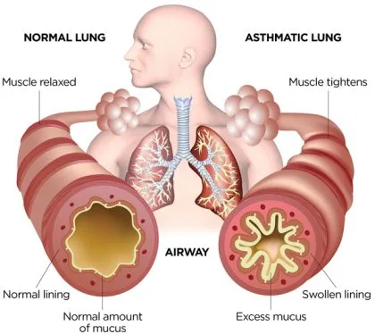
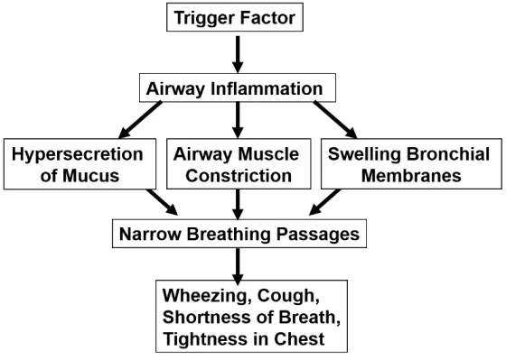
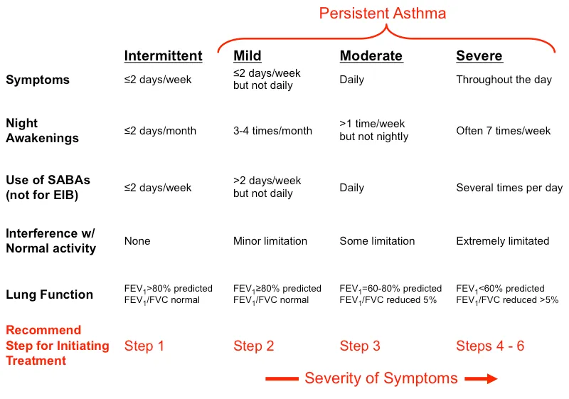
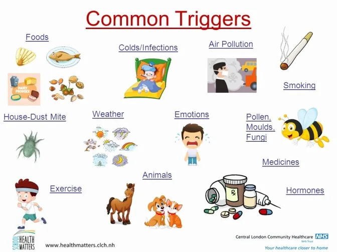
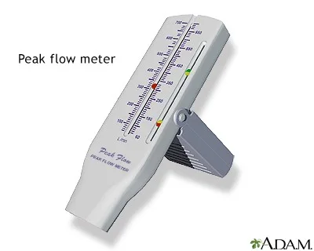
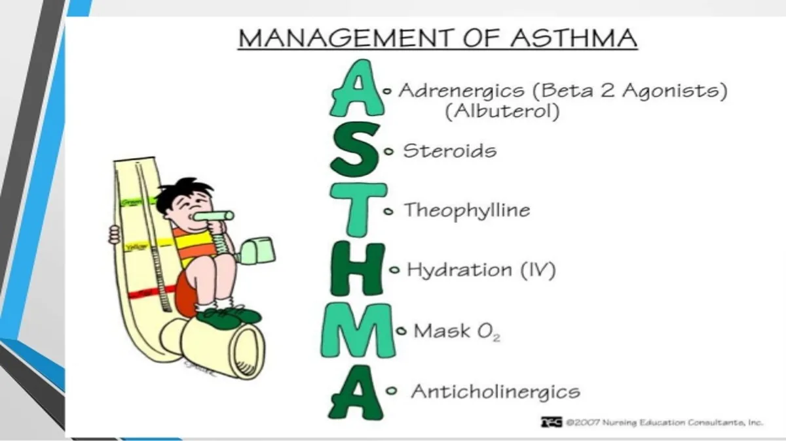
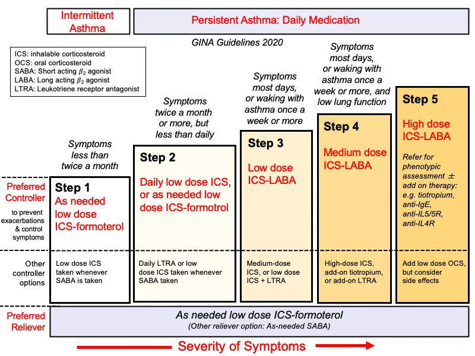

Expanded Nursing Uganda Explanation
Asthma should be understood beyond a short definition. Link the concept to patient history, focused assessment, common risks, nursing priorities, documentation and evaluation of outcomes.
01 Overview
Asthma is a chronic reversible inflammatory disease of the airways characterized by an obstruction of airflow.
Asthma can be defined as:
- A chronic inflammatory disorder of the airways.
- Characterized by airway hyperresponsiveness (AHR), leading to recurrent episodes of wheezing, breathlessness, chest tightness, and coughing.
- These episodes are associated with widespread, but variable, airflow obstruction within the lung that is often reversible spontaneously or with treatment.
In simpler terms, a child with asthma has airways that are always a bit "twitchy" or sensitive (inflammatory), making them overreact to various triggers. When they react, the airways narrow, causing the typical asthma symptoms. This narrowing is usually temporary and can be relieved.
- Inflammation causes recurrent typical characteristics of recurrent episodes of wheezing(occurs during expiration), breathlessness, chest tightness, and coughing, which respond to treatment with bronchodilators.
- Many inflammatory mediators play a role; mast cells, eosinophils, T-lymphocytes, macrophages, neutrophils, and epithelial cells.
- No precise cause but genetic and triggers are associations
The pathophysiology of asthma involves a complex interplay of genetic predisposition, environmental exposures, and immunological responses that lead to characteristic changes in the airways.
- Airway Inflammation: This is the central and most important feature of asthma. The airways of children with asthma are chronically inflamed, even when they are asymptomatic. Immune Cells Involved: Eosinophils: Key inflammatory cells, recruited to the airways, releasing mediators that damage epithelial cells and contribute to bronchoconstriction.
- Mast Cells: Reside in the airway mucosa; when activated by allergens or other stimuli, they release potent bronchoconstrictive and inflammatory mediators (e.g., histamine, leukotrienes, prostaglandins).
- T-lymphocytes (Th2 cells): Predominantly involved in allergic asthma, producing cytokines (e.g., IL-4, IL-5, IL-13) that promote B-cell production of IgE, eosinophil differentiation and survival, and mucus production.
- Macrophages & Neutrophils: Also contribute to the inflammatory process, especially in severe asthma or in asthma triggered by viral infections.
- Structural Changes: Chronic inflammation can lead to remodeling of the airway wall over time, including: Epithelial damage/shedding: Increases airway sensitivity.
- Subepithelial fibrosis: Thickening of the basement membrane.
- Smooth muscle hypertrophy and hyperplasia: Increase in the size and number of smooth muscle cells, contributing to greater airway narrowing.
- Mucus gland hyperplasia and hypersecretion: Leads to excessive, tenacious mucus production that can plug airways.
- Angiogenesis: Formation of new blood vessels, contributing to airway edema.
- Airway Hyperresponsiveness (AHR): This refers to the exaggerated bronchoconstrictor response of the airways to various stimuli that would cause little or no effect in healthy individuals.
- It's a consequence of the underlying inflammation and structural changes. The smooth muscle cells contract more easily and forcefully.
- Common stimuli include allergens, irritants (smoke, fumes), cold air, exercise, viral infections, and certain chemicals.
- Reversible Airflow Obstruction: During an asthma exacerbation, several factors lead to narrowing of the airways: Bronchoconstriction: Contraction of the airway smooth muscle, rapidly reducing the airway lumen.
- Airway Edema: Swelling of the airway walls due to inflammation and increased vascular permeability.
- Increased Mucus Production and Plugging: Thick, tenacious mucus can further block smaller airways.
- This obstruction causes characteristic symptoms like wheezing (due to air trying to pass through narrowed airways), shortness of breath, and cough.
- The reversibility (either spontaneously or with bronchodilator medication) is a hallmark feature distinguishing asthma from other obstructive lung diseases.
The pathophysiology in asthma is reversible and airway inflammation leads to airway narrowing.
- Trigger Factor. When a person is exposed to a trigger, it causes airway inflammation and mast cells are activated.
- Activation. When the mast cells are activated, it releases several chemicals called mediators . These chemicals perpetuate the inflammatory response, causing increased blood flow, vasoconstriction, hypersecretion of mucus, the attraction of white blood cells to the area, airway muscle constriction and bronchoconstriction.
- Narrow Breathing Passages. Acute bronchoconstriction due to allergens results from a release of mediators from mast cells that directly contract the airway.
- Asthma features: As asthma becomes more persistent, the inflammation progresses and other factors may be involved in the airflow limitation, Signs include wheezing, cough, dyspnea, chest tightness. etc.
It's important to recognize that asthma isn't a single disease but rather a syndrome with different presentations, especially in children:
- Early-Onset (Viral-Induced) Wheezing/Asthma: Often triggered by viral respiratory infections (e.g., RSV, rhinovirus) in infancy and early childhood.
- May not involve significant allergic sensitization.
- Many children with viral-induced wheezing "grow out of it" by school age, but a subset will go on to develop persistent asthma.
- This phenotype is often characterized by neutrophilic inflammation.
- Allergic (Atopic) Asthma: The most common phenotype in older children and adults.
- Strong association with atopy (a genetic predisposition to develop allergic reactions), often coexisting with eczema and allergic rhinitis.
- Triggered by exposure to common allergens (e.g., dust mites, pollen, pet dander).
- Characterized by eosinophilic inflammation and IgE-mediated responses.
- Often persists into adulthood.
- Other Phenotypes: Less common but include exercise-induced bronchoconstriction, occupational asthma, and severe asthma that is difficult to control.
The Global Initiative for Asthma (GINA) guidelines, widely used internationally, classify asthma into categories based on symptom frequency, nocturnal awakenings, reliever use, and interference with normal activity. Lung function measurements (FEV1 and FEV1/FVC ratio) are also considered for older children capable of performing spirometry.
- Intermittent Asthma: Asthma is considered intermittent if without treatment any of the following are true: Daytime symptoms: ≤ 2 days per week.
- Nighttime awakenings: ≤ 2 times per month.
- Reliever (SABA) use: ≤ 2 days per week.
- Interference with normal activity: None.
- Exacerbations: Infrequent, usually mild.
- Lung Function (for children > 5 years capable of spirometry): FEV1 > 80% predicted.
- FEV1/FVC: Normal.
- Recommendation: No daily controller medication is typically needed, but a short-acting beta-agonist (SABA) is used for quick relief of symptoms.
- Mild Persistent Asthma: Asthma is considered mild persistent if without treatment any of the following are true: Daytime symptoms: > 2 days per week but not daily.
- Nighttime awakenings: 3-4 times per month.
- Reliever (SABA) use: > 2 days per week but not daily.
- Interference with normal activity: Minor limitation.
- Exacerbations: May affect activity.
- Lung Function (for children > 5 years): FEV1 > 80% predicted.
- FEV1/FVC: Normal.
- Recommendation: Requires daily low-dose inhaled corticosteroid (ICS) or a leukotriene receptor antagonist (LTRA) as a controller medication, in addition to SABA for quick relief.
- Moderate Persistent Asthma: Asthma is considered moderate persistent if without treatment any of the following are true: Daytime symptoms: Daily.
- Nighttime awakenings: > 1 time per week but not nightly.
- Reliever (SABA) use: Daily.
- Interference with normal activity: Some limitation.
- Exacerbations: May require oral corticosteroids.
- Lung Function (for children > 5 years): FEV1 60-80% predicted.
- FEV1/FVC: Reduced by 5%.
- Recommendation: Requires daily low-to-medium dose ICS plus a long-acting beta-agonist (LABA), or medium-dose ICS, in addition to SABA for quick relief.
- Severe Persistent Asthma: Asthma is considered severe persistent if without treatment any of the following are true: Daytime symptoms: Continual.
- Nighttime awakenings: Often nightly.
- Reliever (SABA) use: Several times per day.
- Interference with normal activity: Extreme limitation.
- Exacerbations: Frequent, may require oral corticosteroids, hospitalizations.
- Lung Function (for children > 5 years): FEV1 < 60% predicted.
- FEV1/FVC: Reduced by > 5%.
- Recommendation: Requires daily high-dose ICS plus LABA and, potentially, oral corticosteroids, or other advanced therapies (e.g., biologics), in addition to SABA for quick relief.
These are factors that increase a child's susceptibility to developing asthma. They often represent a combination of genetic predisposition and early-life environmental exposures.
- Genetic Predisposition/Family History: Atopy: The strongest identifiable risk factor. Atopy is a genetic tendency to develop allergic diseases (asthma, allergic rhinitis, eczema). Children with a personal history of atopic dermatitis (eczema) or allergic rhinitis are at significantly higher risk for asthma.
- Parental Asthma: Children with one asthmatic parent have a 2-3 fold increased risk of developing asthma; if both parents have asthma, the risk is even higher (up to 6-fold). This highlights the strong hereditary component.
- Environmental Exposures in Early Life: Exposure to Tobacco Smoke: Maternal Smoking during Pregnancy: Increases the risk of wheezing and asthma in offspring, potentially due to altered lung development.
- Secondhand Smoke Exposure (Passive Smoking): A well-established risk factor for developing asthma and a major trigger for exacerbations. It irritates airways, impairs lung growth, and increases susceptibility to respiratory infections.
- Early Life Viral Respiratory Infections: Respiratory Syncytial Virus (RSV) and Rhinovirus: Severe infections, especially in infancy, are strongly associated with recurrent wheezing and an increased risk of developing persistent asthma, particularly in genetically susceptible individuals.
- The link is complex; these infections might unmask underlying airway hyperresponsiveness or contribute to airway remodeling.
- Allergen Exposure: Early sensitization to perennial indoor allergens: (e.g., house dust mites, pet dander from cats/dogs, cockroaches) can contribute to the development of allergic asthma, especially in genetically predisposed children.
- The "hygiene hypothesis" suggests that reduced exposure to certain microbes in early life might shift the immune system towards an allergic (Th2) response.
- Air Pollution: Exposure to outdoor air pollutants (e.g., particulate matter, ozone, nitrogen dioxide from traffic) can increase the risk of asthma development and exacerbations.
- Other Factors: Low Birth Weight/Prematurity: Premature infants, especially those with bronchopulmonary dysplasia (BPD), have a higher risk of developing recurrent wheezing and asthma-like symptoms.
- Obesity: Growing evidence suggests a link between childhood obesity and an increased risk of developing asthma, particularly non-allergic phenotypes.
- Gastroesophageal Reflux Disease (GERD): While GERD can be a trigger for existing asthma, severe or chronic GERD in infancy may also be a risk factor for developing respiratory symptoms.
- Sex: Before puberty, boys are more likely to have asthma than girls. This trend often reverses after puberty.
Triggers are specific stimuli that can cause airways to narrow and provoke asthma symptoms in a child who already has asthma. Identifying and avoiding these triggers is a cornerstone of asthma management.
- Allergens: Indoor Allergens: House Dust Mites: Found in bedding, carpets, upholstered furniture.
- Pet Dander: From cats, dogs, birds, rodents.
- Cockroach Allergens: Found in droppings and body parts, especially in urban environments.
- Molds: Indoors (damp areas like bathrooms) and outdoors.
- Outdoor Allergens: Pollen: From trees, grasses, weeds (seasonal).
- Irritants: Tobacco Smoke: Both secondhand and thirdhand smoke (residue on surfaces).
- Air Pollution: Outdoor pollutants (ozone, particulate matter, sulfur dioxide, nitrogen dioxide).
- Strong Odors/Fumes: Perfumes, cleaning products, paint fumes, deodorizers, cooking odors.
- Chemical Sprays: Hair spray, aerosols.
- Wood Smoke/Fireplace Smoke.
- Dust: General household dust (distinct from dust mite allergen).
- Respiratory Infections: Viral Infections: The most common trigger for asthma exacerbations in children, especially in infants and preschoolers. Viruses like rhinovirus (common cold), RSV, influenza, and parainfluenza can cause significant airway inflammation and trigger wheezing episodes.
- Bacterial Infections: Less common as direct triggers, but can sometimes lead to exacerbations.
- Exercise: Exercise-Induced Bronchoconstriction (EIB): Occurs when airways narrow during or after physical activity, often exacerbated by cold, dry air. It is a common manifestation of asthma, not a separate condition, but can also occur in non-asthmatic individuals.
- Weather Changes / Meteorological Factors: Cold Air: Can directly irritate and narrow airways.
- Changes in Temperature or Humidity.
- Thunderstorms: Can worsen asthma, possibly by increasing airborne allergen levels (e.g., pollen fragments).
- Emotional Factors / Stress: Strong Emotions: Crying, laughing, anger, anxiety, stress can sometimes trigger or worsen asthma symptoms, likely through vagal nerve stimulation or changes in breathing patterns.
- Gastroesophageal Reflux Disease (GERD): Acid reflux into the esophagus can indirectly trigger bronchoconstriction through vagal reflexes or microaspiration into the airways.
- Certain Medications: Nonsteroidal Anti-Inflammatory Drugs (NSAIDs): (e.g., ibuprofen, aspirin) can trigger asthma in a small subset of sensitive individuals (aspirin-exacerbated respiratory disease, AERD).
- Beta-blockers: (even eye drops) can worsen asthma by causing bronchoconstriction.
The clinical presentation of asthma in children is highly variable, influenced by the child's age, the severity of the asthma, and the specific triggers involved. It's often referred to as "the great masquerader" because its symptoms can overlap with other common childhood respiratory illnesses.
Regardless of age, asthma is primarily characterized by a constellation of recurrent respiratory symptoms, often worse at night or in the early morning, or in response to exercise or other triggers.
- Wheezing: A high-pitched, whistling sound produced by air passing through narrowed airways, usually heard on exhalation but can be heard on inhalation in severe cases.
- It's the most recognized symptom, but its absence does not rule out asthma, especially in young children or during a severe attack (where airflow might be too limited to produce a sound – "silent chest").
- Cough: Can be dry, persistent, hacking, or can produce sputum (though less common in young children).
- Often worse at night, with exercise, or after exposure to triggers.
- Sometimes, cough is the only symptom, leading to a diagnosis of "cough-variant asthma."
- Shortness of Breath (Dyspnea): Difficulty breathing, often described by older children as feeling "winded" or "out of breath."
- In younger children, this may manifest as rapid breathing (tachypnea) or increased work of breathing.
- Chest Tightness: A constricting sensation in the chest, often described by older children as feeling like "an elephant sitting on my chest" or "a band squeezing my chest."
- Younger children may rub their chest or be irritable.
The way these cardinal symptoms manifest and are described can differ significantly between infants/toddlers and older children/adolescents.
Diagnosing asthma in this age group is challenging because:
- Their airways are smaller and more prone to obstruction.
- They often have frequent viral infections that cause wheezing, and many "outgrow" this viral-induced wheezing.
- They cannot verbally describe symptoms.
Common Manifestations:
- Recurrent episodes of wheezing and coughing, often following a viral infection (e.g., "always getting colds that go to their chest").
- Persistent cough, especially at night or with activity.
- Increased work of breathing: Tachypnea (rapid breathing).
- Nasal flaring.
- Retractions: Sucking in of skin between ribs (intercostal), below ribs (subcostal), or above clavicles (supraclavicular/substernal).
- Grunting: A short, low sound heard at the end of exhalation, indicating partial closure of the glottis to maintain lung volume.
- Head bobbing (in severe cases).
- Feeding difficulties: Interruptions in feeding due to breathlessness.
- Irritability and restlessness: Due to hypoxemia and respiratory distress.
- Fatigue or lethargy: In severe cases.
- Prolonged expiratory phase.
In this age group, symptoms become more similar to adult asthma and they are better able to communicate their symptoms.
- Classic Symptoms: Recurrent wheezing, coughing, shortness of breath, chest tightness.
- Exercise-Induced Symptoms: Cough, wheezing, or shortness of breath that starts during or shortly after physical activity. This is a very common presentation in this age group.
- Nocturnal Symptoms: Symptoms that wake them from sleep (cough, wheezing, dyspnea).
- Seasonal Patterns: Symptoms worsening during specific seasons (e.g., pollen season).
- Symptoms after exposure to specific triggers: (e.g., pets, dust, smoke).
- Decreased activity or avoidance of sports due to breathlessness.
- Poor performance in school (due to nocturnal symptoms or exacerbations).
An asthma exacerbation is an acute or subacute episode of progressively worsening shortness of breath, cough, wheezing, or chest tightness, or a combination of these symptoms.
- Signs of a Mild-to-Moderate Exacerbation: Increased respiratory rate.
- Use of accessory muscles (mild).
- Audible wheezing.
- Cough.
- Children may be anxious.
- Able to speak in full sentences.
- Oxygen saturation (SpO2) often > 92-94%.
- Peak Expiratory Flow (PEF) or FEV1: 50-80% of personal best or predicted.
- Signs of a Severe Exacerbation (Requires urgent medical attention): Severe dyspnea, child struggles to breathe.
- Speech limited to single words or phrases.
- Use of accessory muscles (prominent retractions, sternocleidomastoid use).
- Loud wheezing, or absent wheezing ("silent chest" - very ominous sign indicating severe airflow obstruction).
- Cyanosis (bluish discoloration of lips, nail beds) - a late sign of hypoxemia.
- Confusion, drowsiness, altered consciousness (ominous signs).
- Tachycardia and possibly bradycardia (in very severe cases).
- SpO2 < 92%.
- PEF or FEV1: < 50% of personal best or predicted.
- Status Asthmaticus: A severe, life-threatening asthma exacerbation that is refractory to standard bronchodilator and corticosteroid therapy. This is a medical emergency requiring aggressive management.
The diagnosis of asthma is largely clinical, based on a recurring pattern of respiratory symptoms and response to asthma medications.
A detailed history should be obtained from the child (if old enough) and caregivers, focusing on:
- Symptom Characteristics: Recurrent episodes of wheezing, coughing, shortness of breath, chest tightness.
- Timing: Worse at night, in the early morning, or seasonally.
- Triggers: What provokes symptoms (e.g., exercise, cold air, allergens, viral infections, strong odors, emotional stress).
- Response to Medications: Improvement with bronchodilators (e.g., albuterol/salbutamol).
- Family History: Parental history of asthma, allergies, eczema.
- Siblings with asthma.
- Personal History: History of atopic dermatitis (eczema), allergic rhinitis (hay fever).
- History of viral-induced wheezing in infancy.
- Recurrent pneumonia or bronchitis.
- Hospitalizations or emergency department visits for respiratory symptoms.
- Environmental exposures (tobacco smoke, pets, mold).
- Impact on Daily Life: School absences.
- Limitations on physical activity or sports.
- Sleep disturbances.
Often normal between exacerbations, but during an exacerbation, findings may include:
- Audible Wheezing: On auscultation (inspiration, expiration, or both). Absence of wheezing (silent chest) can be an ominous sign of severe obstruction.
- Increased Work of Breathing: Tachypnea, retractions (intercostal, subcostal, supraclavicular), nasal flaring, prolonged expiratory phase.
- Cyanosis: Bluish discoloration of lips/nail beds (a late sign of severe hypoxemia).
- Tachycardia: Increased heart rate.
- Hyperinflation: Barrel chest, especially in chronic, poorly controlled asthma.
- Allergic Stigmata: Nasal crease, allergic shiners (dark circles under eyes), pale/boggy nasal mucosa (suggesting allergic rhinitis).
- Spirometry with Bronchodilator Reversibility (for children typically ≥ 5-6 years old): Gold standard for diagnosis and monitoring in cooperative children.
- Procedure: Measures forced expiratory volume in 1 second (FEV1) and forced vital capacity (FVC).
- Asthma Findings: Obstructive pattern (reduced FEV1, reduced FEV1/FVC ratio).
- Reversibility: A significant improvement in FEV1 (usually ≥ 12% increase) after administration of a short-acting bronchodilator (e.g., albuterol) confirms reversible airflow obstruction, a hallmark of asthma.
- Peak Expiratory Flow (PEF) Monitoring: Measures the maximum speed of exhalation.
- Can be used at home for daily monitoring of lung function in older children (>5-6 years) to detect worsening asthma and guide management.
- Less sensitive than spirometry and effort-dependent, but useful for identifying personal best and variability.
- Bronchial Provocation Tests (e.g., Methacholine Challenge): Used when asthma is suspected but spirometry is normal and reversibility is absent.
- Patient inhales increasing doses of a bronchoconstricting agent (e.g., methacholine). A significant drop in FEV1 indicates airway hyperresponsiveness.
- Usually performed in specialized centers.
- Allergy Testing (Skin Prick Test or Specific IgE Blood Test): Identifies specific allergens that trigger symptoms, helping with avoidance strategies.
- Positive tests support a diagnosis of allergic asthma but do not, by themselves, diagnose asthma.
- Fractional Exhaled Nitric Oxide (FeNO): Measures the level of nitric oxide in exhaled breath, which is often elevated in eosinophilic airway inflammation (a type of asthma inflammation).
- Can be useful as an adjunctive tool in diagnosis and for monitoring response to inhaled corticosteroids.
- Therapeutic Trial: In young children (< 5 years) where objective tests are difficult, a diagnosis can sometimes be made based on a significant improvement in symptoms (e.g., reduction in wheezing episodes, cough, improved activity) with a trial of asthma controller medication (e.g., low-dose inhaled corticosteroid).
- Non-specific Symptoms: Cough and wheezing are common with viral infections.
- Difficulty with Objective Tests: Cannot perform spirometry or PEF.
- "Transient Early Wheezers": Many infants wheeze with viral infections but do not develop chronic asthma.
- Predictive Indices: The Asthma Predictive Index (API) uses a combination of major (parental asthma, eczema, allergic sensitization) and minor (other allergic conditions, wheezing unrelated to colds) criteria to predict which wheezing infants are more likely to develop persistent asthma.
It's crucial to rule out other conditions that can cause similar respiratory symptoms.
- Infections: Bronchiolitis: (Especially in infants, usually RSV-related).
- Viral Tracheobronchitis (Croup): Inspiratory stridor, barking cough.
- Pneumonia: Fever, localized crackles/rhonchi, infiltrates on chest X-ray.
- Pertussis (Whooping Cough): Paroxysms of coughing followed by inspiratory "whoop."
- Upper Airway Obstruction: Foreign Body Aspiration: Sudden onset of coughing, choking, unilateral wheezing. Always consider in any child with new onset or unexplained unilateral wheezing.
- Laryngomalacia/Tracheomalacia: Stridor, often worse when crying or feeding.
- Vocal Cord Dysfunction: Paradoxical vocal cord movement leading to inspiratory obstruction.
- Enlarged Adenoids/Tonsils: Can cause noisy breathing and obstructive sleep apnea.
- Congenital/Structural Abnormalities: Cystic Fibrosis (CF): Chronic cough, recurrent infections, failure to thrive, steatorrhea.
02 Nursing Uganda Clinical Lens
Use Asthma as a practical nursing topic, not only a memorized definition. Prioritize airway, breathing, circulation, pain, asepsis, wound healing and early complication detection.
- What to understand first: define asthma, identify the normal or expected pattern, then explain what changes when the patient is unwell.
- Why it matters in care: the nurse must recognize risk early, explain findings clearly, document accurately and know when to escalate.
- How to revise it: connect each point to assessment, nursing diagnosis or care problem, intervention, rationale and evaluation.
03 Assessment Guide
- Vital signs, pain, bleeding, perfusion, level of consciousness and injury pattern.
- Wound appearance, drainage, odour, swelling, temperature and surrounding skin.
- Fluid balance, mobility, nutrition, surgical site risk and ordered investigations.
04 Nursing Priorities, Rationales and Outcomes
- Stabilize urgent problems first, then prepare for investigations or theatre care.
- Maintain aseptic technique, pain control, wound care and documentation.
- Prevent shock, infection, pressure injury, deep vein thrombosis and delayed healing.
The rationale for these priorities is patient safety: nursing actions should prevent deterioration, reduce discomfort, support recovery and create clear evidence for the next caregiver.
- Expected outcome: The patient remains stable, wound healing progresses, pain is controlled and complications are recognized early.
05 Patient Teaching and Revision Check
- Explain asthma in simple language the patient or caregiver can repeat back.
- Teach warning signs, medicine or follow-up instructions, hygiene or lifestyle points where relevant.
- For exams, prepare a short answer using: definition, causes or risk factors, signs, assessment, management, complications and prevention.
- For ward practice, document baseline findings, actions taken, patient response and the plan for review.
Illustrations and Diagrams (14)








6 more diagrams available, open the lesson for full illustrations.
Related Video Lectures
Watch nursing lecture videos on YouTube for this topic. Opens in a new tab.
Watch on YouTubeExternal link: YouTube may use its own cookies and terms. Nursing Uganda is not affiliated with YouTube.